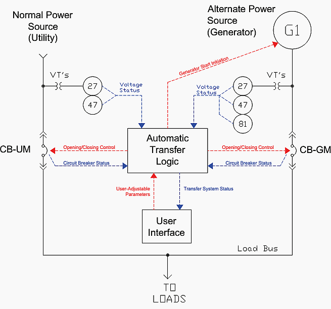
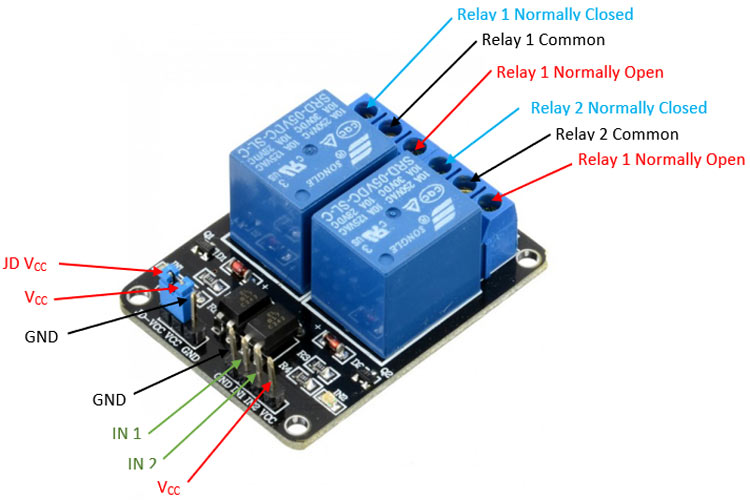
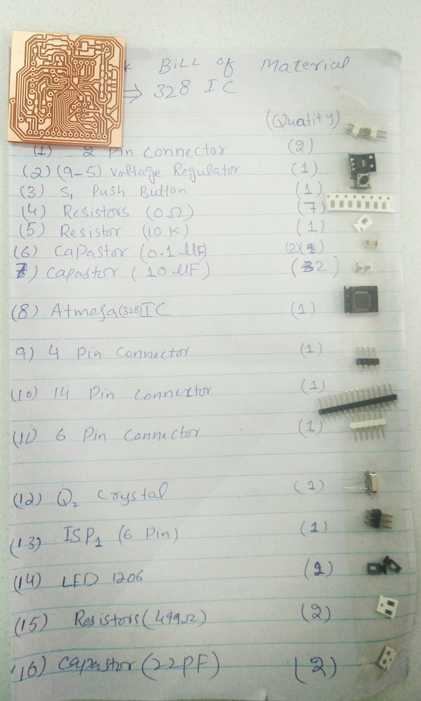
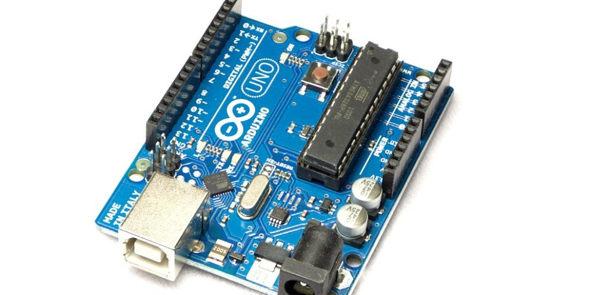
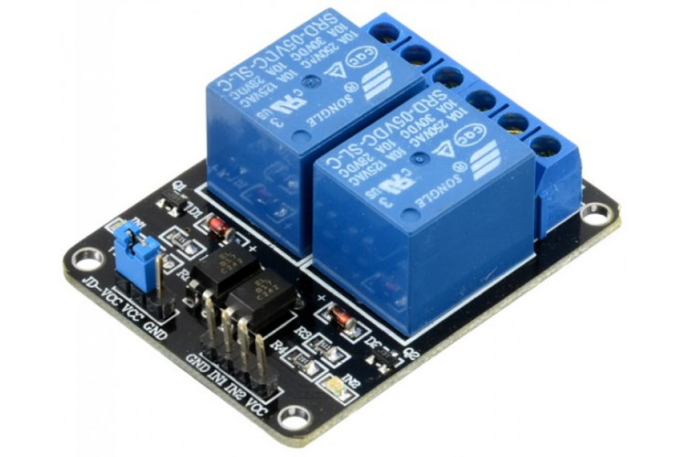

Dr.Muhammad Asim Samejo
| Introduction | High Level Design | Design | Results | Conclusion | Appendix |
OUR TEAM MEMBERS
| Shah Faisal | Zeeshan Ali |
Introduction
The objectives of this oproject are:
A transfer switch is an electrical Switch that switches a load between two sources.
A transfer switch in general seeks to simplify and provide safety when making use of a generator.
The transfer switch diverts power from your utility to your generator quickly and easily. In the case of a manual switch, this is done, of course, manually through a lever or similar device,
But in the case of an automatic switch, the entire process occurs instantly, providing you generator power in the split of a second in the event of an outage.
Automatic switches are constantly monitoring your business’ power, waiting for any interruptions or delays.
If the switch deems the power to be out, be it from a storm or accident, it will instantly and safely change over to generator power, supplying electricity to critical functions that you have set beforehand.
Main Objective:
The main objective is to keep maintain the soure supply to the load.it can be both manually and automatic,but here we have focused on automatic two controll either of two source AC or DC.
Automatic transfer switch ATS panels with mains detection built in monitor the mains supply. When they detect a mains absence, normally using a two channel relay.
Normally they will disconnect from the mains and send a signal to the microcontroller to start the other source/DC.
it will send an "available" signal back. Thus the ATS will maintain continuity providing supply to the load will. Moreover our focus is on providing
high quality automation system very cheaply and this project is our first step reagarding this aim.
High Level Design

The dicrete components in this project are:
1)Two Channel Relay Module
2)Arduino Uno
2)esp8266 wifi module
Major Components And Their Brief Description
The main components which are used in this project and their brief description are as follow;
- x1 Arduino Uno
- x1 esp8266 wifi module
- x2 Two Channel Relay Module
- x1 9v battery
- (I2c communication)
- Microcontroller: ATmega328
- The Atmega328 is a very popular microcontroller chip produced by Atmel.
- Input voltage: (7-12) Volts
- Operating Voltage: 5 Volts
- Flash Memory: 32 KB, 2 KB used by bootloader
- SRAM: 2KB
- Analog input Pins: 6 (A0-A5)
- Digital pins: 14
- DC Current per I/O Pin: 40 mA
- It has EEPROM memory of 1KB
- It has SRAM memory of 2KB
- It has 8 pins for Analouge(ADC) operation(denoted by PA0 to PA7)
- It has 14 (fourteen) Digital pins specified by (D0 to D13)
- ESP8266 wifi module enables internet connectivity to embedded applications.
- Inter-Integrated Circuit (I²C) serial communication protocol.
- Microcontroller communicates with ESP8266-01 wifi module using UART having specified Baud rate (Default 115200)..
- 2.4 GHz Wi-Fi (802.11 b/g/n, supporting WPA/WPA2),.
- general-purpose input/output (16 GPIO),.
- analog-to-digital conversion (10-bit ADC).
- pulse-width modulation (PWM)..
- I²S (Inter-IC Sound) interfaces with DMA(Direct Memory Access) (sharing pins with GPIO).
- Supply voltage – 3.75V to 6V.
- Trigger current – 5mA.
- Current when relay is active - ~70mA (single), ~140mA (both).
- Relay maximum contact voltage – 250VAC, 30VDC
- Relay maximum current – 10A
-
The dual-channel relay module is more or less the same as a single-channel relay module, but with some extra features like optical isolation. The dual-channel relay module can be used to switch mains powered loads from the pins of a microcontroller. The dual-channel relay module contains switching relays and the associated drive circuitry to make it easy to integrate relays into a project powered by a microcontroller. On the left are two terminal blocks, which are used to connect mains wires to the module without soldering.
Pin Configuration of 2 Channel Relay Module:
The pin configuration of 2 Channel Relay Module is shown below;

Communication Protocol
This module uses I2C protocol in order to communicate with arduino Uno, the esp8266 wifi module will be the source of controlling these two sources via a microcontroller and that data will be communicated with to perform specific task.

Bill Of Materials
This is a list of materials, which we used in our PCB of automatic transfer switch project.

Deligation of Tasks
Work was distributed evenly. The group worked together in lab visits frequently, doing pairwise programming or hardware setup.
Level Task Assign To Start Date Finish Date 1.1 Project selection idea Fifty Fifty 11-Feb-21 16-Feb-21 1.2 Literature review Fifty Fifty 18-Feb-21 1-March-21 1.3 Datasheets Fifty Fifty 1-March-21 19-March-21 1.4 Selection of components Zeshan Ali 21-March-21 5-April-21 2.1 Design of electrical circuit Shah Faisal 6-March-21 25-March-21 2.2 Design of PCB layout Zeshan Ali 26-March-21 15-April-21 2.3 Design of finished product Shah Faisal 16-April-21 1-May-21 3.1 Debugging of hardware Shah Faisal 2-May-21 31-May-21 3.2 Debugging of software Fifty Fifty 1-June-21 20-June-21 4.1 Final assembly Zeshan Ali 26-June-21 18-July-21 4.1 Design of Web page Fifty Fifty 25-July-21 31-July-21 Sites Refrences
We have visited the following webpages for our refrence,guidence as well as for understanding and we are thankful to following webpages holders,really speaking these webpages were very helpful.
- EATON
- ENGINEERING PROJECTS link
- THE POWER SITE
- ELECTRONICS WINGS
- COMPONENTS 101
-

{kind=link}
Arduino Uno
Pin Configuration of Atmega328:
The pin configuration of Atmega328 IC is under;

Microcontroller
Although we have many controllers ATMEGA328P is most popular of all because of its features and cost. ARDUINO boards are also developed on this controller because of its features. With program memory of 32 Kbytes ATMEGA328P applications are many. With various POWER SAVING modes it can work on MOBILE EMBEDDED SYSTEMS. With Watchdog timer to reset under error it can be used on systems with minimal human interference. With advanced RISC architecture, the controller executes programs quickly. Also with in chip temperature sensor the controller can be used at extreme temperatures. These all features add together promoting ATMEGA328P further.
esp8266 wifi module

- ESP8266 wifi module is low cost standalone wireless transceiver that can be used for end-point IoT developments.
esp8266 wifi module:
The pin configuration of esp8266 wifi module is shown below;

2 Channel Relay Module 
{kind=link}
{kind=link}
Intellectual Properties and Ethics Considerations
The project is not difficult and we believe there should not by any intellectual property considerations. The idea of creating an automatic transfer switch is not new. There have been plenty of commercial products and hobbyist projects that include anything from professional-ATS.This project does not endanger the public or the environment, and we believe our project does not have interests conflict with any party. Although it's a automatic, it is simple and cannot compete with existing commercial products. However, the concepts we used in this project are helpful in understanding how to achieve a reliable system. The concepts are widely used in current intelligent systems. If anyone has any doubt on our measured data, feel free to contact us. We are happy to share our experience on how the data can be collected. When building our projects, we discussed with each other, and with professor and fellows. We listened to other's advices carefully because they are very helpful, but we would also think thoroughly before we take any advice. To protect intellectual property, we strictly follow reference rules and list our sources in the Site Refrence from which we take alot help regarding our project.
Commercialization Aspects
Now we have not made our product up to that level to present as a commercial product due to not suppling of an AC source instead of this we had been considered two different level Dc sources in order to work in a very soft manner. Now by not using AC source we conclude that it might be dangerous. We can further proceed our project by using AC source and that we would be present our product as a commercial product.Design
The Design process has several layers to it. Electrical Design, Software Design, Final Hardware AssemblyElectrical Circuit
Schematic designe
Here is Schematic of Microcontroller boardMilled PCB
1) First PCB For Microcontroller we just insert 14 pin Connector there for our required component setting like sensor, LED , Relay
After schemetic we moved to PCB Board design.In the board design we faced difficulty in to make comapct size of board. We routed and derouted again and again in order to make it very compact so that the handle should be in small size and it can be hold in hand very easily.
PCB Milled by This Machine

Bootloader Process
Succcefully we done with burning the bootloader.
Big challenge After Designing PCB1
After completion of our PCB-1 we have checked our project either it is working properly or not, we faced a big challeng in running our project, when we uploaded the project code to Atmega328 IC, at start esp8266 module was unable to have a connectivity with microcontroller.An error was generating again and again but with the help of sir nadir in the installation of its libraries we handled it. were trying to balance the system.Before uninstalling of libraries no data appears on Serial Monitor. Then we reset the System and again we met with the same problem like previous one which we have discussed. This was the time where we stuck to a point upto one week. For our project working we have to reset our system which was not the proper or professional way, then finally we decided to use Arduino nano microcontroller and we carry on our work towards our completion project. The schematic and PCB layouts of second PCB are as under;
Challenging Faced In Routing
This was our first time to have work on Eagle PCB designing software, At start we faced several problems in routing process like, we have left very small distances between traces and components which actually creates a problems for PCB Milling Machine, then our Instructor guides us about issues. So before printing our PCB we lift little spaces between traces and components so that it becomes easier for PCB Milling Machine. also, during routing we faced hindrances to have work as professional student but with passage of time we learn alot, how to tackle and deal with issues in routing phase.
Challenging Faced In Bootloader
After designing our first PCB in which we used Atmega328 IC and respective components which are mandatory in our project, we move towards bootup loader pocess and we met with a proplem in bootloading a simple program. After that we start thinking about..(How to debug the error?) and we took a multimeter in order to check connectivity between different components and current paths in PCB. Finally, we got an error in connectivity. After troubleshooting the PCB we have successfully done with bootloader stage.
Results
Ideally this section we got our desired output.it was the requirment that to controll two different sources automatically and maintain the system reliabilityConclusions
This is our semester project of embadded System. We learn some life long things from it includings some technical Skills Software as well as Hardware skills.And learn how to read datasheets of different components.We learn how to search websites and also learn how to choose compnents we face problem.We choose ATMEGA 328 IC because it is full_filling our purpose. We learn how to embadde different components with micro_Controllar.
SOFTWARE CASE:
we learn EAGLE software by making of different PCBs including simple circuit,micro_controllar and PCB for embadding different components .we have full command on it now. And we also use Solid Works for making enclosure for our product using 3d printer(ULTIMAKER).We have also command on it . We aslo make sheet for leaser cutting for LCD. And We also learn programing Skills from this project and learn Arduino language for writting programes. C language is used in arduino programming.We faced alot of problems while doing programming and while routing of PCBs and making caseing is another big challenge for us.These issues are very helpful for us to learn different things in deep.
HARDWARE CASE:
In case of Hardware we learn soldering of SMT as well as DIP components on Printed Circuit Board. And we Also learned the assembly of components. Although we faced alot of issues in assembly of components because we take very compact measurements of our product which cause a big problem for us.We also learned interfacing of components(ESP8266, SENSOR,RELAY ) with arduino.
In conclution we learn many things as we were facing problem and one thing is that we learn how to tackle with the problem and how to search about problems and how to solve them. Problems can be any kind. It can be interfacing of components,routing of PCBs,Soldering of components,programming , working on Solid Works, assembly problems and many more.
Appendix
Here we have different files which we have created in order to accomplish our task like, Solid work files,Eagle circuits/PCB Layouts files,Arduino Code and rml files. one can easily access these files by just clicking on the pictures. This will help you in better understanding.
Dr. Muhammad Asim Ali (Assistant Professor Department of Electrical Engineering Sukkur IBA) Engineer Nadir Ali (Fab lab Department of Electrical Engineering Sukkur IBA)
Eagle PCB Layout files
Arduino Code
Here we have a list of componente and having cost.
Components
Quantity
Cost
Arduino UNO
1
PKR 500.00
ESP8266 wifi module
1
PKR 520.00
Relays
2
PKR 350.00
9V Battery
1
PKR 40.00
Report Submitted on Time
.......................
Matlab Profeciency
.......................
Special Thanks